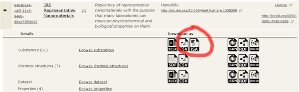

Investigation-Study-Assay (ISA)
The ISA platform includes three major layers: Investigation, Study and Assay where the actual experimental readouts are stored in additional data layer.
ISA-TAB
ISA (Investigation-Study-Assay) is a general purpose multi-layer platform for description of complex meta-data needed for the interpretation of experiments developed by S. Sansone’s group at the University of Oxford e-Research Centre. ISA includes three major layers: Investigation, Study and Assay where the actual experimental readouts are stored in an additional data layer. Since the ISA version 1 published in 2008, the ISA platform implementation relies on tab delimited text files and the file format representation is known as ISA-Tab.
ISA-TAB-Nano
The ISA-Tab-Nano project is an effort of the National Cancer Institute (NCI), National Cancer Informatics Program (NCIP) and Nanotechnology Informatics Working Group (US Nano WG). The ISA-Tab-Nano extension, includes an additional material file within the study layer, which is used for the description of the NM composition and nominal NM characteristics (size, shape, as reported by the manufacturer).
ISA-JSON
The ISA group started migration in 2015 to a new JSON format, instead of tab delimited files as more flexible and efficient way to store the experimental meta-data. Currently, there are ISA v1 and ISA v2 JSON versions. The ISA v2 is based solely on JSON, where the backward compatibility with the ISA v1 and ISA-TAB format is preserved via ISA-tools project utilities.
The new ISA format is labelled ISA-JSON version 1 and uses . The ISA-JSON specification is based on a set of JSON schemas used to validate the syntactical and logical correctness of the ISA-JSON information. It distinguishes between core components and extensions, for example the support for nanomaterials is considered an extension. The JSON schemas describe various components of the 3 layer of ISA platform (i.e. investigation, study, assay, sample, source, ontology annotation, etc). The schemas are available at https://github.com/ISA-tools/isa-api/tree/master/isatools/schemas/isa_model_version_1_0_schemas/core
New material schema for ISA-JSON
We have developed a Substance/Material JSON schema which is a nano material extension of ISA-JSON v1, the counterpart of the ISA-Tab-Nano format.
The schema is available at the enanomapper/isa-api fork at GitHub .
The main JSON schema, mcm_material_schema.json, defines a material (substance) with several basic properties: id, lotIdentifier, name etc. The material composition is an array of constituents.
A separate helper JSON schema constituent_schema.json is implemented for definition of all constituents of the nanomaterial. The composition of a nanomaterial may contain one or several constituents. Each constituent has a role (core, coating, etc.) and linkages to other constituents. The linkage describes the relation between two components. For example two components may be covalently bonded, one be embedded or encapsulated within another constituent etc.
Feedback is welcome!
ISA-JSON export for enanoMapper database

More information at How to convert Excel data files into ISA-JSON or RDF.
Towards user friendly tools to generate ISA formatted files
With previous experience of formatting experimental data as ISA-Tab files manually as very time consuming, we have been exploring various solutions to improve the user friendliness. Taking into account the observation that the majority of EU NanoSafety Cluster projects prefer to prepare their experimental data using custom spreadsheet templates, the eNanoMapper team took an alternative, but pragmatic, approach by implementing support for a large set of custom spreadsheet templates for data preparation. We developed the configurable Excel parser, and are able to parse diverse spreadsheets into the same internal data model and export the data from this data model into different formats. This allows us to provide format converters, in the same fashion as OpenBabel interconverts between chemical formats.
Being able to write the internal data model into ISA-JSON files accomplishes the goal of automatically generating the ISA files, and enables exporting query results from the database in a desired format.
ISA-TAB Logic templates
NANoREG released a large set of Excel templates at http://www.nanoreg.eu/media-and-downloads/templates/269-templates-for-experimental-data-logging. While not strictly following the ISA-TAB and ISA-TAB-Nano formats, the NANoREG templates have been designed around ISA-Tab-logic, i.e. structuring the data in investigation-study-assay related groups.
NANoREG has produced a set of easy-to-use ‘templates’. The templates have been built by experts in different fields (phys-chem, in vivo and in vitro toxicology) and are aimed at harmonising the logging of experimentally-produced data, and include meaningful and detailed information to support causal correlation analyses, modelling and Safe-by-Design (SbD).
We developed tools to read the NANoREG Excel templates and convert into eNanoMapper data model. This enable import into eNanoMapper database and conversion of the NANoREG Excel templates to ISA-JSON v1 compliant files. The ISA-JSON v1 files can be converted to the legacy ISA-TAB files via the Python tools available at ISA.